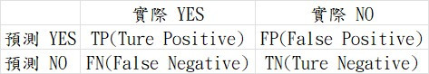

【day28】不要再用準確率(Accuracy)評估分類模型了!-混淆矩陣(Confusion Matrix)與評估指標
發布日期: 2022-10-02 22:05:57
原文連結: https://ithelp.ithome.com.tw/articles/10302523
資料不平衡產生的問題
我們先前在判斷分類任務時，只使用了準確率(Accuracy)來判別，但只依靠Accuracy來判斷分類模型卻不是一種最佳的方法，我們先看到以下例子:
假如我正在做一個關於正面評論會造成什麼影響的研究，但資料集卻是不平衡的狀態，在資料集中負面評論比例高達了90%，正面評論卻只有僅僅10%，如果這時程式都猜測結果是負面的Accuracy就會高達90%，這樣子的評估方式肯定是有問題的。
混淆矩陣(Confusion Matrix)

所以在分類任務中應該要根據需求去調整評估方式，我們今天的主題
混淆矩陣(Confusion Matrix)，就一種是用於分類問題的評估技術，這種技術衍生出了許多不同的指標，接下來讓我先介紹圖片中的TP(Ture Positive)、FP(False Positive)、FN(False Negative)、TN(Ture Negative)所代表的含意。
| 名稱 | 說明 |
|---|---|
| TP(Ture Positive) | 預測為YES 實際也為YES |
| FP(False Positive) | 預測為YES 實際為NO |
| FN(False Negative) | 預測為NO 實際為YES |
| TN(Ture Negative) | 預測為NO 實際也為NO |
TP、TN代表程式預測正確，FP、FN代表預測失敗的結果，其中FP、FN則是在4個參數中最為重要的兩個指標，這就與我們在觀看餐廳評價時相同，我們不會觀看5星評價而是觀看1星評價(畢竟沒有人會想給自己店刷1星吧)，所以在混淆矩陣中，我們會先考慮FP與FN的數值，因為通過這兩個指標我們能知道錯誤究竟在哪裡。
FP也會叫Type I Error，實驗中會非常在意Type I Error，因為這樣代表實驗中的理論是錯的，但實驗結果卻是對的。我們可能花費了一堆時間與金錢去做實驗，最後結果也是好的，但後來發現研究的理論跟方向是錯的，那就可就問題大了。所以Type I Error的數值通常都會設定很小，若實驗中超過這個數值就能拋棄掉這個做法了。
FN也叫做Type II Error，Type II Error與Type I Error相反，是代表理論正確，但實驗結果是錯誤的，這時只需要更換實驗方式來達成正確的結果。
混淆矩陣產生的評估指標
接下來我們來說到，從混淆矩陣中產生的4種最常見的評估指標準確率(Accuracy)、精確率(Precision)、召回率(Recall)、F1 Score。
| 名稱 | 公式 |
|---|---|
| 準確率(Accuracy) | (TP+TN)/total data |
| 精確率(Precision) | TP/(TP+FP) |
| 召回率(Recall) | TP/(TP+FN) |
| F1 Score | 2/(1/Precision)+(1/Recall)) |
我相信Accuracy大家都很熟悉了，所以我只說Precision、Recall與F1 Score。
精確率(Precision)與召回率(Recall)
Precision主要是計算警告誤報(False alarm)出現的的機率，這種評估方式是計算所有的正面結果中(實際值、預測值)實際為正面的機率，也就是說Precision是在判斷正面資料的準確率。
Recall則是再計算目標的判斷失誤率(Miss)，這種評估方式與Precision相似，不過與精確率不同的是，Recall是在判斷成功的資料內，正面資料的準確率。
兩者都是判斷正面的準確率但好像又不太同，那麼這兩個評估方式該怎麼使用?該用在哪些狀況上面呢?我們舉兩個例子來幫助理解。
例子1:
今天有一個自動門的系統，當判斷這個人為大樓住戶時才會開啟，這時候我們只需要了解這一個系統判斷大樓住戶的成功率究竟是多少，這時我們就會利用Precision來評估這個系統。
例子2:
今天警政署做了一個系統，要來判斷哪些人是通緝犯，這時不能放過任何一個通緝犯，我們就需要使用Recall來評估這個系統
若我們想要做出一個叫重要的系統(例子2)我們就會參考Recall值來評估，這時程式的精確率可能很低(匡列到很多路人)但召回率卻很高(找出很多通緝犯)。
但若是比較簡易的系統(例子1)就會採用Precision，這時Precision就會比較高(判斷到的基本上是大樓的住戶)，但recall卻會很低(大樓的住戶可能會被擋在外面)。
F1 Score
但今天覺得Recall與Precision都很重要呢?這時候就要用F1 Score這個評估方式，這個公式的計算方式其實就是計算Recall與Precision的調和平均數(harmonic mean)，當這個分數越靠近1，我們系統的效能就會越好。
結論
在AI的模型中評估方式相當的重要，因為這直接代表了這個神經網路模型的好壞，而我們判斷一個神經網路模型，基本上不會只使用一個指標，因為如果只使用一種指標，只能代表這個評估方式與我們的神經網路模型相性很好，所以我們需要使用多樣評估方式，來評估神經網路的實際效能。